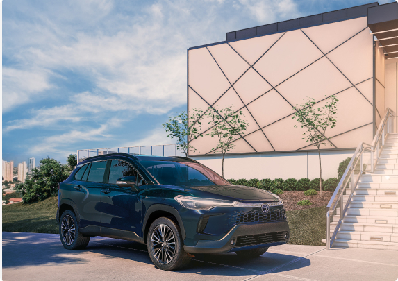
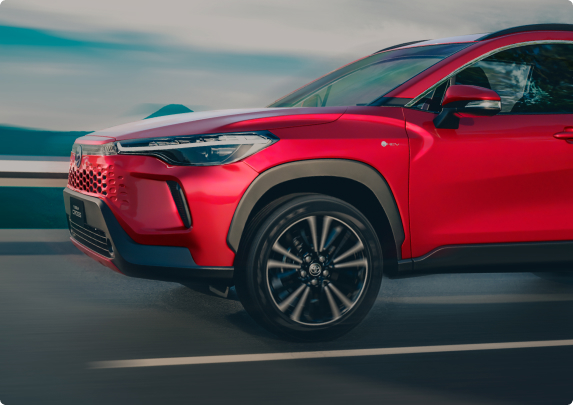
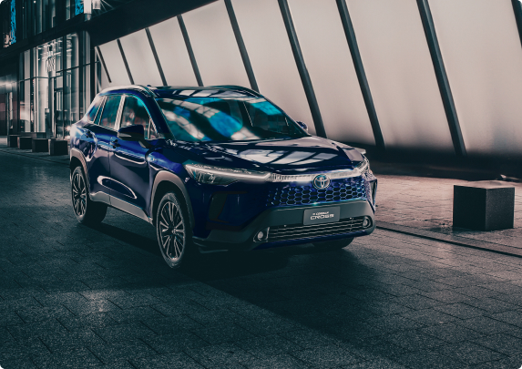

Mobilidade e Inovação
Híbridos, Híbrido FLEX e Plug in
Combina motor a combustão com motores elétricos (um ou dois, em geral). A bateria é recarregada nas desacelerações do veículo ou na utilização do motor a combustão.
Desenvolvido pela Toyota, combina a eficiência do sistema elétrico com a sustentabilidade do motor flex quando abastecido com etanol.
Demonstrando um comprometimento com a evolução e adaptação ao mercado, oferecemos além da tecnologia híbrida com abastecimento a gasolina, a tecnologia que traz a possibilidade de recarregar o seu veículo na tomada e com uma autonomia de condução 100% elétrica.
Partida e condução em velocidade baixa
Ao dar partida e em conduções de baixa velocidade, o veículo prioriza o motor elétrico, reduzindo o consumo e o ruído.
Condução normal
Em momentos de condução normal, ambos os motores podem funcionar em conjunto para otimizar o desempenho.
A tecnologia híbrida da Toyota utiliza um sistema inteligente de gerenciamento de energia que decide automaticamente quando usar cada motor, buscando a melhor eficiência.
Aceleração forte
Quando é exigido mais potência do veículo, como em acelerações fortes ou subidas íngremes, o motor a combustão é priorizado.
Desaceleração e frenagem
Durante frenagens e desacelerações, o motor elétrico funciona como um gerador, convertendo a energia cinética em elétrica para recarregar a bateria.